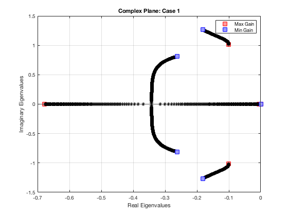
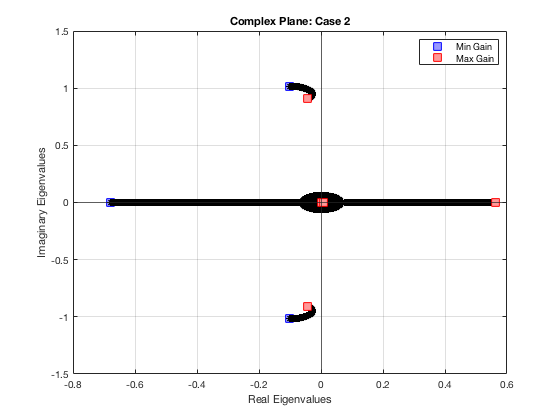
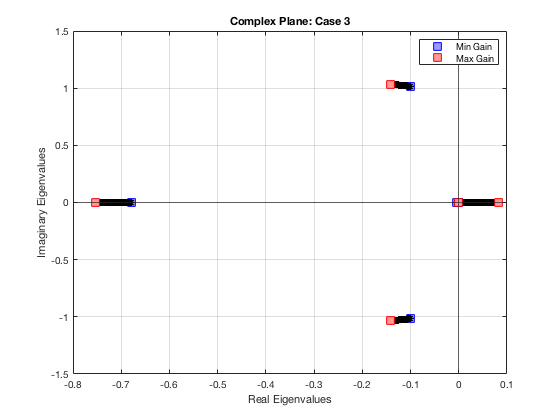
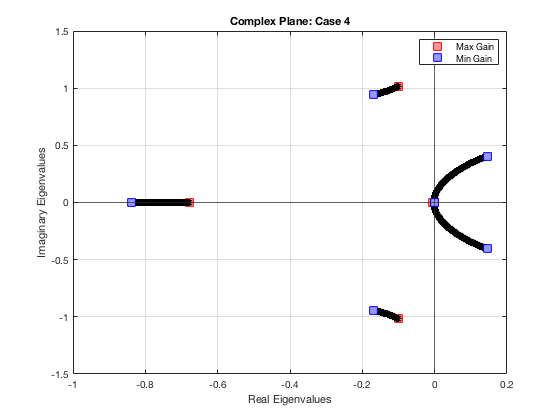
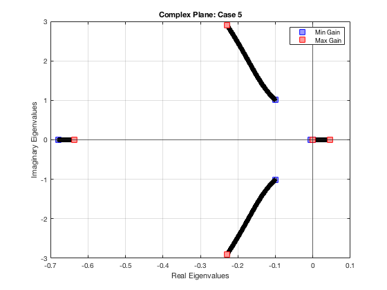
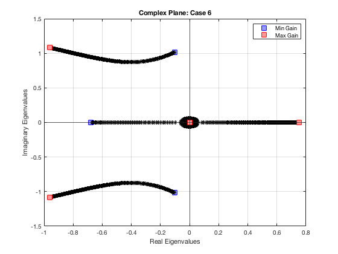
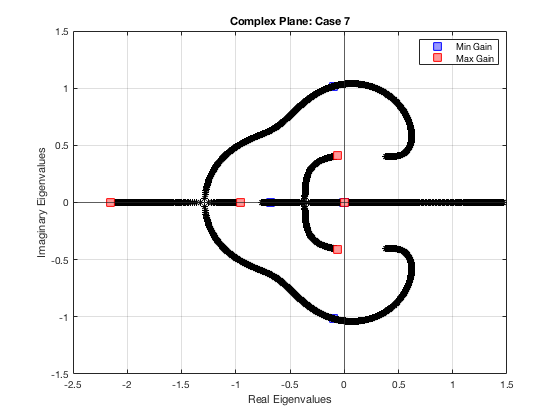
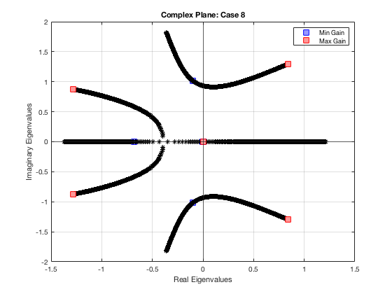
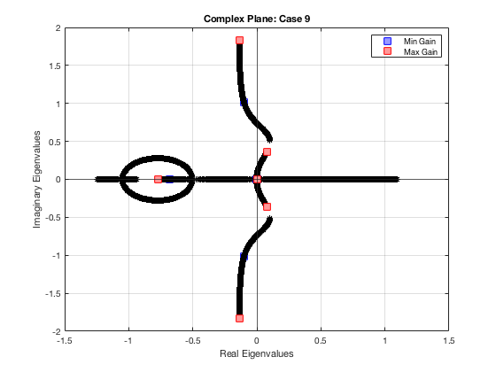

Contents
ASEN 3128 - Assignment 11 - Main
Lateral Dimensional Derivatives / B747-100 dynamics
Author: Margaux McFarland Collaborators: Date: 12/5/19
clc; clear; close all; %B-747 givens (Case II) W = 2831737.87; %N, weight g = 9.81; %N, gravity m = W/g; %kg, mass rho = 0.6530; %air density, kg/m^3 u0 = 157.886; %V=u in stability frame, airspeed, m/s S = 510; %planform area, m^2 b = 59.6433; %span, m theta0 = 0; %radians zeta = deg2rad(-6.8); %radians %moment of inertias Ix = 2.4676e7; %kg*m^2 Iy = 4.4878e7; Iz = 6.7384e7; Izx = 1.3151e6; %coefficients from table 6.7 Cyb = -0.8771; Cyp = 0; Cyr = 0; Clb = -0.2797; Clp = -0.3295; Clr = 0.304; Cnb = 0.1946; Cnp = -0.04073; Cnr = -0.2737; %dimensionalize stability derivates using table 4.5 Yv = (1/2)*rho*u0*S*Cyb; Yp = (1/4)*rho*u0*b*S*Cyp; Yr = (1/4)*rho*u0*b*S*Cyr; Lv = (1/2)*rho*u0*S*b*Clb; Lp = (1/4)*rho*u0*b^2*S*Clp; Lr = (1/4)*rho*u0*b^2*S*Clr; Nv = (1/2)*rho*u0*S*b*Cnb; Np = (1/4)*rho*u0*b^2*S*Cnp; Nr = (1/4)*rho*u0*b^2*S*Cnr; mat = [Yv Lv Nv; Yp Lp Np; Yr Lr Nr];
Problem 2
%convert to stability frame Yv_s = Yv; Yp_s = Yp*cos(zeta); Yr_s = Yr*cos(zeta) + Yp*sin(zeta); Lv_s = Lv*cos(zeta) - Nv*sin(zeta); Lp_s = Lp*cos(zeta)^2 - (Lr + Np)*sin(zeta)*cos(zeta) + Nr*sin(zeta)^2; Lr_s = Lr*cos(zeta)^2 - (Nr - Lp)*sin(zeta)*cos(zeta) - Np*sin(zeta)^2; Nv_s = Nv*cos(zeta) + Lv*sin(zeta); Np_s = Np*cos(zeta)^2 - (Nr - Lp)*sin(zeta)*cos(zeta) - Lr*sin(zeta)^2; Nr_s = Nr*cos(zeta)^2 + (Lr + Np)*sin(zeta)*cos(zeta) + Lp*sin(zeta)^2; mat2 = [Yv_s Lv_s Nv_s; Yp_s Lp_s Np_s; Yr_s Lr_s Nr_s]; Ix_s = Ix*cos(zeta)^2 + Iz*sin(zeta)^2 + Izx*sin(2*zeta); Iz_s = Ix*sin(zeta)^2 + Iz*cos(zeta)^2 - Izx*sin(2*zeta); Izx_s = -((1/2)*(Ix - Iz)*sin(2*zeta) + Izx*(sin(zeta)^2 - cos(zeta)^2)); %prime coefficients Ix_prime = (Ix_s*Iz_s - Izx_s^2)/Iz_s; Iz_prime = (Ix_s*Iz_s - Izx_s^2)/Ix_s; Izx_prime = Izx_s/(Ix_s*Iz_s - Izx_s^2); %calculate A matrix A11 = Yv_s/m; A12 = Yp_s/m; A13 = (Yr_s/m)-u0; A14 = g*cos(theta0); A21 = (Lv_s/Ix_prime)+(Izx_prime*Nv_s); A22 = (Lp_s/Ix_prime) + (Izx_prime*Np_s); A23 = (Lr_s/Ix_prime) + (Izx_prime*Nr_s); A24 = 0; A31 = (Lv_s*Izx_prime) + (Nv_s/Iz_prime); A32 = (Lp_s*Izx_prime) + (Np_s/Iz_prime); A33 = (Lr_s*Izx_prime) + (Nr_s/Iz_prime); A34 = 0; A41 = 0; A42 = 1; A43 = tan(theta0); A44 = 0; %A matrix A = [A11 A12 A13 A14;... A21 A22 A23 A24;... A31 A32 A33 A34;... A41 A42 A43 A44];
Problem 1
%spiral mode approximation E = g*((A21*A33 - A23*A31)*cos(theta0) + (A22*A31 - A21*A32)*sin(theta0)); D = -g*(A21*cos(theta0) + A31*sin(theta0)) + A11*(A23*A32 - A22*A33) + A13*(A22*A31 - A21*A32); eig_spiral = -E/D; %roll mode approximation eig_roll = A22;
Problem 2
%non-dimennsional control derivatives (table 7.3) Cy_dela = 0; Cy_delr = 0.1146; Cl_dela = -1.368e-2; Cl_delr = 6.976e-3; Cn_dela = -1.973e-4; Cn_delr = -0.1257; %dimensionalize the control derivatives Y_dela = Cy_dela*(1/2)*rho*u0^2*S; Y_delr = Cy_delr*(1/2)*rho*u0^2*S; L_dela = Cl_dela*(1/2)*rho*u0^2*S*b; L_delr = Cl_delr*(1/2)*rho*u0^2*S*b; N_dela = Cn_dela*(1/2)*rho*u0^2*S*b; N_delr = Cn_delr*(1/2)*rho*u0^2*S*b; mat3 = [ Y_dela L_dela N_dela; Y_delr L_delr N_delr]; %B matrix B11 = Y_dela/m; B12 = Y_delr/m; B21 = L_dela/Ix_prime + (Izx_prime*N_dela); B22 = (L_delr/Ix_prime) + (Izx_prime*N_delr); B31 = Izx_prime*L_dela + (N_dela/Iz_prime); B32 = (Izx_prime*L_delr) + (N_delr/Iz_prime); B41 = 0; B42 = 0; B = [B11 B12; B21 B22; B31 B32; B41 B42]; %augemented matrix A_lat_aug = [A [0 0; 0 0; 0 0; 0 0]; [0 0 sec(theta0) 0 0 0; 1 0 0 0 u0*cos(theta0) 0]]; B_lat_aug = [B; 0 0; 0 0];
Problem 3
%matrix of K values for each part K_mat = {0:-0.01:-10;... %part a 0:0.01:10;... %part b 0:0.01:10;... %part c 0:-0.01:-20;... %part d 0:0.0001:0.1;... %part e 0:0.01:2;... %part f 0:0.01:5;... %part g 0:0.01:5;... %part h 0:0.01:5}; %part i %loop through each part a-i [mat_len,~] = size(K_mat); for i = 1:mat_len %loop through K values K_vec = K_mat{i}; figure(i) minK = min(K_vec); %minimum K values maxK = max(K_vec); %max K value for j = 1:length(K_vec) switch i case 1 K = [0 0 0 K_vec(j) 0 0;0 0 0 0 0 0]; case 2 K = [0 K_vec(j) 0 0 0 0;0 0 0 0 0 0]; case 3 K = [0 0 K_vec(j) 0 0 0;0 0 0 0 0 0]; case 4 K = [0 0 0 0 K_vec(j) 0;0 0 0 0 0 0]; case 5 K = [0 0 0 0 0 0;K_vec(j) 0 0 0 0 0]; case 6 K = [0 0 0 0 0 0;0 K_vec(j) 0 0 0 0]; case 7 K = [0 0 0 0 0 0; 0 0 K_vec(j) 0 0 0]; case 8 K = [0 0 0 0 0 0; 0 0 0 K_vec(j) 0 0]; case 9 K = [0 0 0 0 0 0;0 0 0 0 K_vec(j) 0]; end A_CL = A_lat_aug - B_lat_aug*K; [V, EV] = eig(A_CL); eigvals(j,:) = diag(EV)'; plot(real(eigvals(j,:)), imag(eigvals(j,:)),'*k','HandleVisibility','off'); hold on if i >= 7 %include positive feedback as well K = K*-1; A_CL = A_lat_aug - B_lat_aug*K; %positive [V, EV] = eig(A_CL); eigvals(j,:) = diag(EV)'; plot(real(eigvals(j,:)), imag(eigvals(j,:)),'*k','HandleVisibility','off'); hold on minK = min(K_vec); end %mark eigenvalues that correspond to max and min gains if K_vec(j) == minK %plot as blue plot(real(eigvals(j,:)), imag(eigvals(j,:)),'s','MarkerSize',10,... 'MarkerEdgeColor','blue',... 'MarkerFaceColor',[.6 .6 1],'DisplayName','Min Gain'); hold on end if K_vec(j) == maxK %plot as red plot(real(eigvals(j,:)), imag(eigvals(j,:)),'s','MarkerSize',10,... 'MarkerEdgeColor','red',... 'MarkerFaceColor',[1 .6 .6],'DisplayName','Max Gain'); hold on end end disp(i); title("Complex Plane: Case " + i); ylabel('Imaginary Eigenvalues'); xlabel('Real Eigenvalues'); grid on yline(0,'HandleVisibility','off'); xline(0,'HandleVisibility','off'); legend end
1
2
3
4
5
6
7
8
9
        